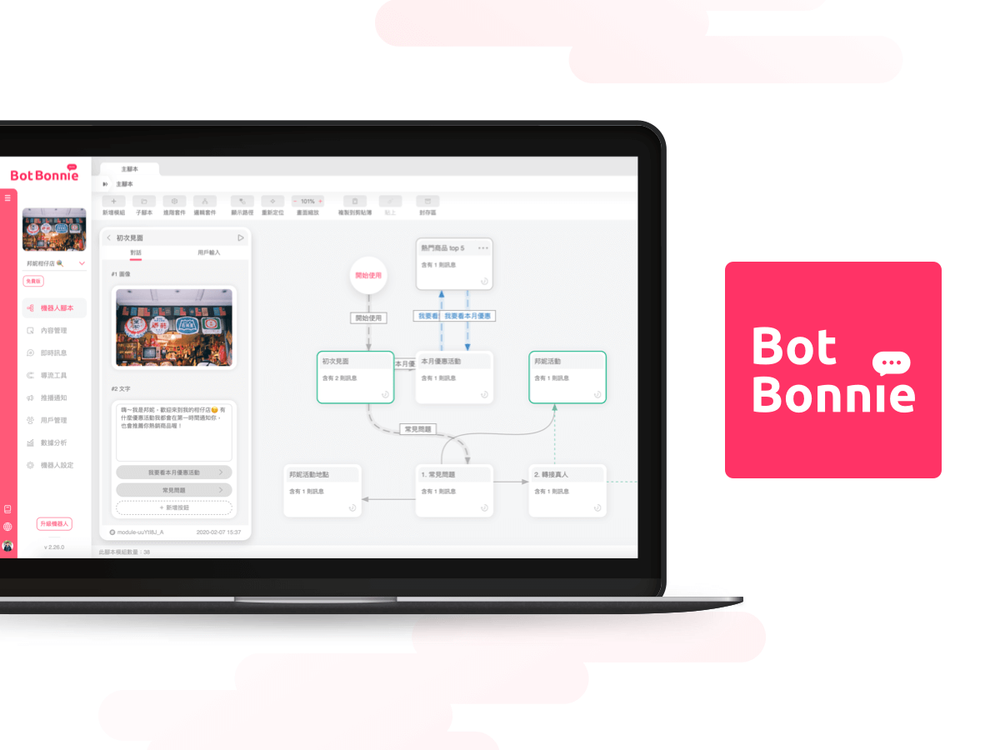
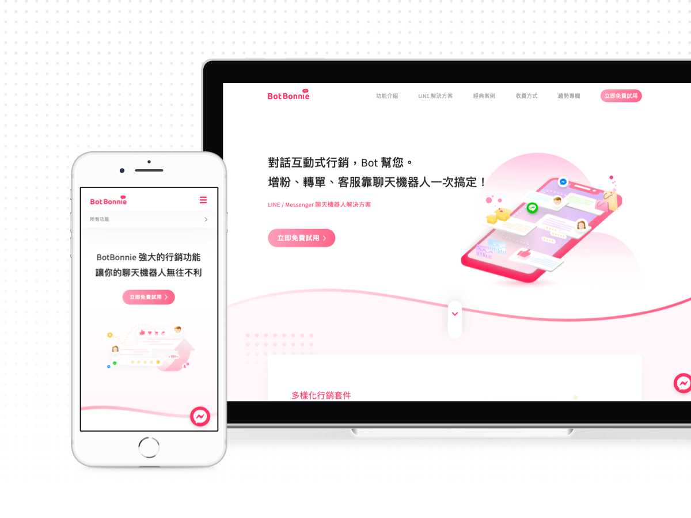
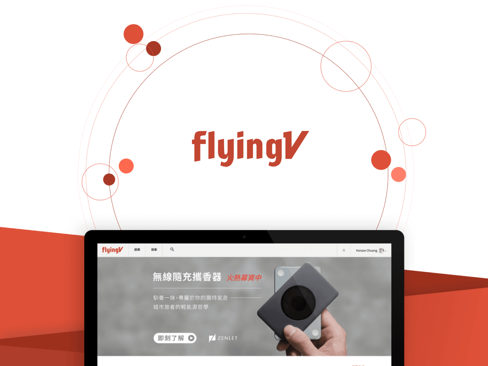
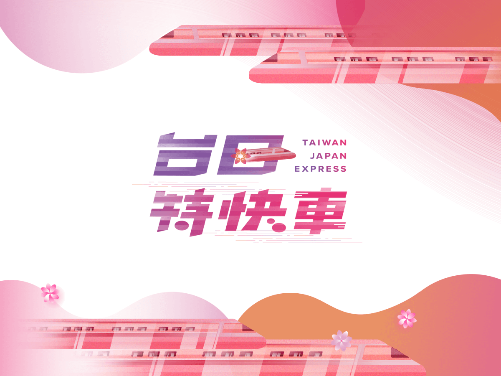
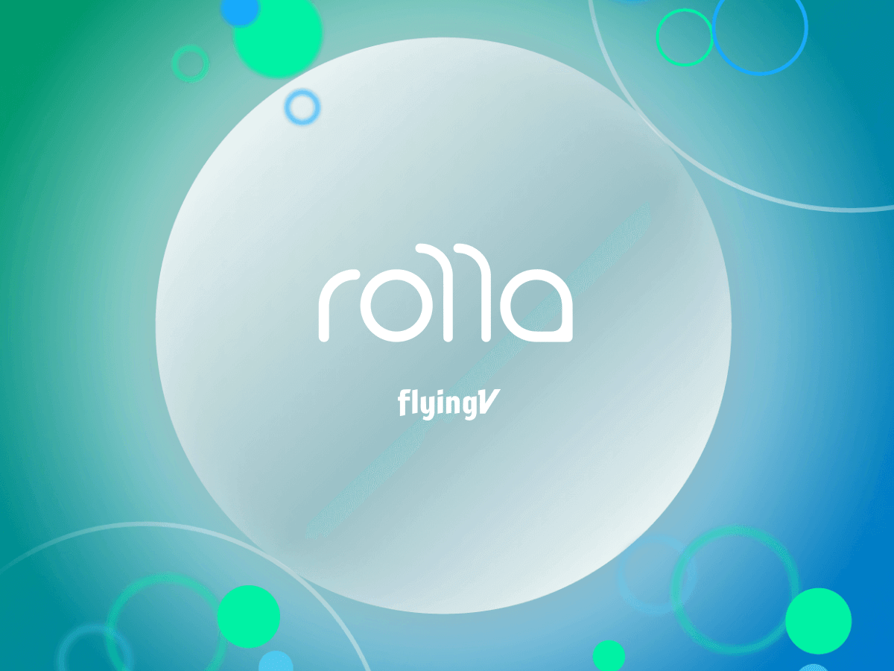
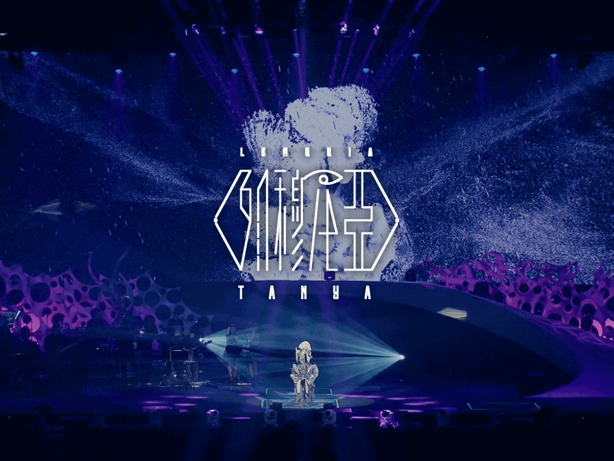

Project｜作品
-

BotBonnie
BotBonnie 提供一站式創建 LINE & Facebook Messenger 聊天機器人服務，透過對話式行銷讓業績與滿意度達標。
BotBonnie is a user-friendly online SaaS platform for designing its own Chatbot service. It helps client to reach the target on satisfaction and sales.
See More ›UI/UX -

BotBonnie 官方網站
原有的官方網站無法傳達產品內容與價值，已不敷使用，因此將新版網站的組織架構與內容完善，視覺重新設計。
Since the first version of landing page can't express the branding & product value. So I redesign the website and strengthen the content about the product.
See More ›Web -

flyingV
改善原有募資平台的付款流程，提高網站轉換率。另外健全原有未開發的站內訊息功能，試圖整合現有平台的社群功能。
We improve our payment flow on the platform to optimize the conversion rate. Besides, we develop the feature "Message" and try to integrate the original feature of social networking.
See More ›UI/UX -

台日特快車
針對台日特快車活動執行線上與線下的視覺設計，包括線上的活動網站以及線下的主視覺和展場設計⋯⋯等。
Execute the campaign project and design the super-attracting visual, including graphic design, landing page & exhibition design.
See More ›Visual -

Rolla
Rolla 為 flyingV 另一持續贊助制募資平台，主要任務是設計官網頁面與制定簡易的設計規範。
Rolla is one of the crowdfunding-branding in flyingV. My ultimate goal is design landing page and define its design guideline to arrange.
See More ›Web -

蔡健雅 列穆尼亞 演唱會
與團隊拍攝演唱會素材，利用攝影測量技術合成虛擬場景至演唱會，讓歌手與觀眾能置身其中。
I assist with UltraCombo team to shoot the video and collect the multimedia footage, emerge them into the virtual scene in live concert via photogrammetry & sound visualization.
See More ›Visual
本身擁有傳播與設計背景的我，
對不同設計類型的作品創作，
時時保持熱情。
I've passionate about any kinds of design projects,
within mass communication and design background.
As a UI/UX designer with 2+ years, worked at Chatbot SaaS operating platform & Crowdfunding e-Commerce platform based in Taiwan previously. I'm enthusiastic about various type of design works and focus on user experience, interaction and visual design. Hope can make the world better through the power of design by myself.
先前於聊天機器人 SaSS 平台與募資電商平台擔任 UI/UX 設計師，主要以使用者經驗、網頁設計規劃和互動視覺設計領域為核心，於用戶體驗領域深耕已有 2 年以上的工作經驗，期待能透過設計的力量讓世界更美好。
Expertise｜專長
-
介面與體驗設計
User Interface & Experience Design
利用 Figma / Sketch 設計 Wireframe 線框圖與 High-fidelity 介面，並以 Invision / Principle 製作原型 Prototyping，與團隊溝通或討論流程時使用 Zeplin 降低溝通門檻，現正自學 Framer X。
-
前端網頁設計
Web Design
使用 HTML 與 CSS 手刻設計網頁，運用 jQuery 和 JavaScript 製作互動原型。時間允許會偏好自己手刻而盡量不去套用現有的框架作設計，也能使用 Grid 和 Bootstrap 系統。
-
圖像視覺設計
Visual Design
有完整的視覺圖像設計經驗，精通各項設計行銷宣傳品視覺與插畫。曾擔任大學的報社攝影，擁有活動攝影相關的經驗。